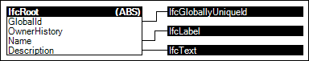

Link to this page
Link to this pageAn object needs to be identifiable for accurate processing by both human and automated processes. Identification may be through several attributes such as Identifcation, Name, Description or GUID. The GUID is compressed for the purpose of being exchanged within an IFC data set - the compressed GUID is refered to as "IFC-GUID". While the IFC-GUID is normally generated automatically and has to be persistent, the Identification may relate to other informal registers but should be unique within the set of objects of the same type. The Name and Description should allow any object to be identified in the context of the project or facility being modelled.
Various objects may have additional identifications that may be human-readable and/or may be structured through classification association.
Various file formats may use additional identifications of instances for serialization purposes, however there is no requirement or guarantee for such identifications to remain the same between revisions or across applications. For example, the IFC-SPF file format lists each instance with a 64-bit integer that is unique within the particular file.
Figure 89 illustrates an instance diagram.
 |
Figure 89 — Identity |